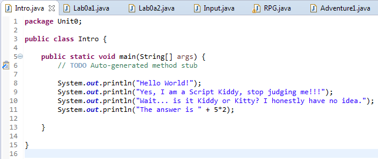
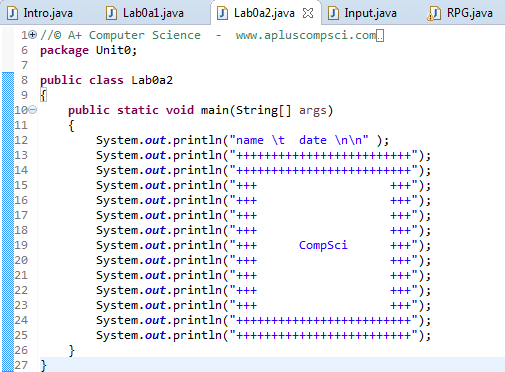

Java Content
So, we covered Java in this relatively short unit. Java is incredibly similar to Jeroo, and follows the same logic as Python, so it wasn't too hard to learn and process all of the units. We went through loops and methods like the other units fairly quickly. Most of the difficulty in this unit was differing between Python and Java.
 We made a text based Rpg, using if statements to check what scenarios the player chose.